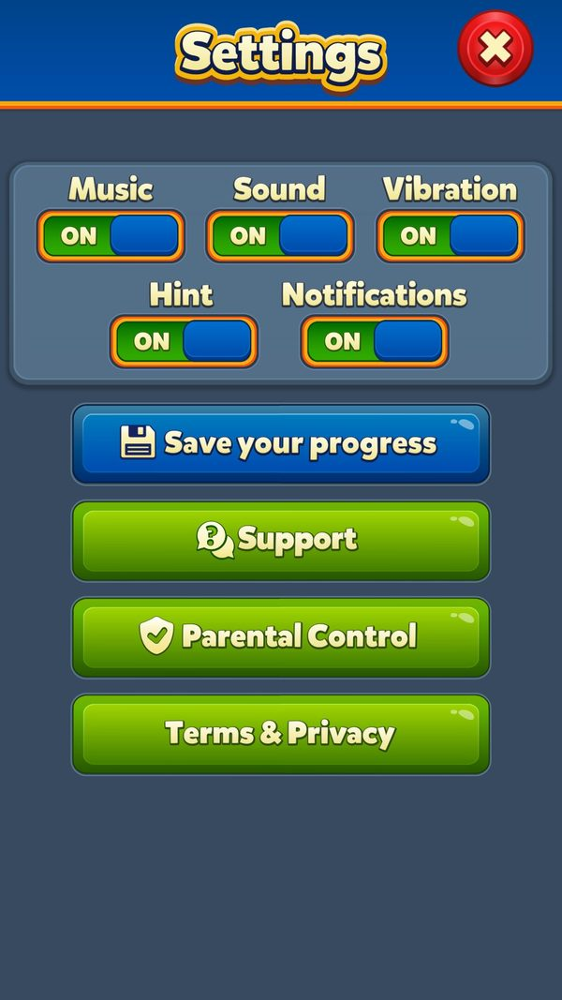

Giữ chân và kéo người chơi quay lại: thông báo, Welcome Back, deeplink, hộp thư
Game kéo người chơi quay lại bằng kênh nào, mỗi kênh bật khi nào, và người nghỉ 15–90 ngày được 'đón' ra sao.
Bài này đi theo một người chơi nghỉ 30 ngày rồi quay lại, từ thông báo đầu tiên tới lúc chơi màn dễ hơn. Đọc khoảng 8 phút. Giá trị quà quay lại nằm ở bài sale-retention-offers; phần hạ độ khó nằm ở liveops-difficulty-segmentation.
- ✅ Giá trị thật: lấy thẳng từ code, config server thật, save hoặc ảnh chụp khi chơi.
- 🧪 Ví dụ minh họa: con số đầu vào giả định để thấy cơ chế chạy; cách tính trong ví dụ là cách tính thật trong code.
- Tên kỹ thuật (class, method, key) để trong ngoặc hoặc ở dòng bằng chứng, để tra code khi cần.
Tóm tắt nhanh
- Lời nhắc tại máy được đặt lại mỗi lần thoát app. Mở app thì huỷ hết; thoát app thì đặt lại theo trạng thái lúc đó (mạng, event, thưởng chưa nhận).Ví dụ ✅ 47 hàm lên lịch: mạng đầy, xin mạng, nhắc 1/2/3/7 ngày, Welcome Back 15/30/90 ngày, Daily Rewards 20:30, từng event.
- Không làm phiền ban đêm, mỗi lời nhắc một lần. Giờ rơi vào khung cấm bị dời tới 10:00; nhắc event có cờ 'đã gửi'.Ví dụ 🧪 Thoát app lúc 23:30, nhắc 'còn thưởng' sau 5 giờ rơi vào 04:30 → dời tới 10:00.
- Push nhắm theo hồ sơ tag. Mỗi lần thoát app, máy gửi tag: level, đội, quốc gia, ngôn ngữ, máy, event đang chơi, nhóm AB, quyền thông báo.Ví dụ ✅ 33 hàm cập nhật tag event; 8 id AB được gắn vào hồ sơ push.
- Thông báo nào cũng dẫn thẳng tới chỗ cần bấm. 45 deeplink mở thẳng event, offer, màn hình; loại 'notdeeplink_' thì chỉ mở app.Ví dụ ✅ Bấm nhắc Hidden Temple 'còn thưởng' → mở thẳng Hidden Temple.
- Welcome Back chỉ tin giờ server. Level ≥ 20 và nghỉ ≥ 15 ngày mới có quà; bậc 1: 15–29 ngày, bậc 2: 30–89, bậc 3: ≥ 90.Ví dụ ✅ Save tài khoản test: lastActiveDate = 20705 = 09/09/2026 (số ngày từ 1970, suy luận khớp ngày chụp). Tài khoản đang level 11 nên nghỉ bao lâu cũng chưa có quà.
- Sau quà là ba lớp 'đón'. 25 màn có nước thưởng; từ level 231 có bản màn dễ hơn; từ level 101 event được mở lại từng cái.Ví dụ 🧪 Quay lại ở level 235 → chơi 'reactivation-235' với +10 nước.
- Trong game còn hộp thư và chấm đỏ. Hộp thư đền bù, quà, popup; mã thưởng qua link; chấm đỏ trên icon (đang được thử giảm).Ví dụ ✅ Tài khoản test ở nhóm 2 của red_action_notification: chấm đỏ giảm ở 54 chỗ UI.
Ví dụ xuyên suốt: người chơi nghỉ 30 ngày rồi quay lại
🧪 Dũng ở level 235, chơi lần cuối ngày 09/09 lúc 20:46 rồi thoát app (cùng ngày tài khoản test có lastActiveDate = 20705 ✅). Mốc ngày, bậc quà, luật chọn màn là thật trong code; tên và level là giả định. Đối chiếu: ✅ tài khoản test thật đang ở level 11.
| Lúc | Người chơi làm gì | Game phản hồi | Kết quả |
|---|---|---|---|
| 09/09 20:46 | Thoát app | Đặt lời nhắc: 1, 2, 3, 7 ngày; Welcome Back 15, 30, 90 ngày; gửi tag push | Lịch: 10/09, 11/09, 12/09, 16/09, 24/09, 09/10, 08/12 |
| 10/09 → 16/09 | Không mở | Lần lượt bắn nhắc 1, 2, 3, 7 ngày | Không mở → không có gì khác |
| 24/09 | Không mở | Bắn 'WelcomeBackGift15DNotification' | Đã đủ 15 ngày → bậc 1 nếu mở hôm nay |
| 09/10 | Bấm thông báo 30 ngày | Mở app; analytics ghi loại link 'reminder30' | Lời nhắc cũ bị huỷ hết |
| 09/10 | — | Ping lấy giờ server → nghỉ 30 ngày → bậc 2; lưu số ngày nghỉ = 30 | Có quà bậc 2 (giá trị: sale-retention-offers) |
| 09/10 | Về Home | Dialog Welcome Back chỉ hiện ở Home | Nhận quà |
| 09/10 | — | Bật 25 màn nước thưởng; level ≥ 231 → bật bản màn dễ; level ≥ 101 → mở event từng cái | Ba lớp 'đón' chạy |
| 09/10 | Chơi level 235 (Super Hard) | Chọn bản 'reactivation-235' cùng hạng khó; cộng nước bậc 2 | +10 nước (bảng bậc 2 bắt đầu 10; trần màn Super Hard 15) |
| Các ngày sau | Vào Home | Event chưa xem hướng dẫn bị chặn; mở từng cái, cách nhau ≥ 3 level và ≥ 1 phiên | Không bị ngợp bởi một loạt event mới |
| ✅ Đối chiếu | Tài khoản test level 11 nghỉ 30 ngày | Dưới level 20 → bậc 0 | Không quà; vẫn nhận các lời nhắc 1/2/3/7 ngày |
Lời nhắc 15/30/90 ngày trùng đúng mốc bậc quà, nên thông báo 'có quà chờ bạn' luôn có quà thật khi mở app.


Ảnh chụp minh họa (4)
Ảnh chụp từ game thật trên LDPlayer. Bấm ảnh để phóng to, phím ← → để chuyển ảnh.


Luồng hoạt động (14 bước)
Tóm lại: mở app → huỷ lời nhắc cũ → chơi → thoát app → đặt lại lời nhắc + gửi tag → thông báo bắn → bấm → deeplink → nghỉ đủ ngày thì Welcome Back → nước thưởng, màn dễ, event từng cái
- 1Mở app: dọn lời nhắcClientĐọc thông báo vừa bấm, huỷ lịch cũ, đọc công tắc trong game và quyền của máy.Ví dụ ✅ Công tắc trong game mặc định bật.
GameNotificationService.Bind / ClearAllNotifications - 2Xin quyền đúng lúcClientChỉ tự xin một lần: phiên đầu, hoặc khi đã đồng ý quyền riêng tư. Sau đó người chơi tự bật trong Settings.Ví dụ ✅ Save: RequestNotificationPermission = 0 (đã xin), SessionCount = 4.
GameNotificationService.RequestPermissionIfRuleSatisfied - 3Mở từ thông báo hoặc linkPlayerLoại có deeplink thì mở thẳng tính năng; mỗi thông báo chỉ dùng một lần.Ví dụ ✅ Loại link được ghi analytics: reminder, reminder15, reminder30, reminder90, lifeask, lifefull, lifeone, inactiveleader.
DeepLinkHelper.CheckNotificationDeeplinkData / GetAnalyticsLinkType - 4Lấy giờ serverServerNhững gì tính theo ngày nghỉ chỉ quyết định sau khi có giờ server.Ví dụ 🧪 Chỉnh lịch máy tới tháng sau để lấy quà → máy chỉ ghi 'ngày xứng đáng', chờ giờ server.
TimeHelper.UpdateTime; WelcomeBackGiftManager.SetOfflineGiftDeservedDate - 5Tính bậc Welcome BackClientNgày nghỉ = hôm nay − ngày chơi cuối. Level ≥ 20 và ≥ 15 ngày thì xếp bậc.Ví dụ ✅ 15–29 → bậc 1, 30–89 → bậc 2, ≥ 90 → bậc 3.
WelcomeBackGiftManager.CalculateAndSetGiftTier - 6Hiện quà ở HomePlayerĐang ở màn khác thì chờ về Home mới hiện.Ví dụ 🧪 Mở app bằng thông báo event → vào event trước, quà hiện khi về Home.
WelcomeBackGiftManager.AddWelcomeBackGiftFlow / SectionChangedToHome - 7Bật chuỗi 'đón'Client25 màn nước thưởng; level ≥ 231 bật bản màn dễ; khởi động mở lại event.Ví dụ 🧪 Level 235 → 'reactivation-235'.
WelcomeBackGiftManager.WelcomeBackGiftAwarded; ReactivationLevelsManager.WelcomeBackGiftReceived - 8Mở event từng cáiClientLevel > 100 và còn > 1 hướng dẫn chưa xem: chặn bớt event, mở dần theo thứ tự ưu tiên.Ví dụ ✅ Thứ tự: thẻ mùa (1) … Mission Control (810); save tài khoản test EventsReactivationData = 0§0§0§1.
EventsReactivationManager.TryStartEventReactivationFlow / IsReadyToShowNewTutorial - 9Hộp thư và mã thưởngServerTin đền bù, quà, popup tuỳ chỉnh, quà Welcome Back do GM gửi; mã 'remoterewards=' đổi quà qua server.Ví dụ ✅ Popup mạng xã hội bản 7, chỉ từ level 300.
SystemMessageManager; DeepLinkHelper.TryExtractRemoteRewardsCode - 10Nhắc trong phiên bằng chấm đỏPlayerChấm đỏ trên icon báo có thưởng hoặc việc cần làm; nhóm thử nghiệm được giảm bớt.Ví dụ ✅ Nút Area có chấm đỏ khi đủ sao làm task.
AbTestHelper.IsNotificationReductionEnabled (54 chỗ gọi) - 11Thoát app: đặt lời nhắcClientGọi 47 hàm lên lịch, mỗi lời nhắc có tiêu đề, nội dung, giờ, mã định danh.Ví dụ ✅ Mạng chưa đầy → hẹn 'có 1 mạng' và 'đầy mạng'.
GameNotificationService.OnApplicationPause / ScheduleNotification - 12Thoát app: gửi tag pushClientGửi gói tag lên hệ push; lỗi liên tiếp thì đổi sang đường dự phòng.Ví dụ ✅ Tag có level, team, appVersion, country, languageCode, deviceModel, pushToken, quyền thông báo.
NotificationTagSender.SendPendingTagsToServer - 13Server gửi pushServerServer chọn người nhận theo tag. Nội dung và lịch push nằm ở server (chưa đọc được).Ví dụ ✅ Có loại 'inactiveleader' (đội có trưởng nhóm không hoạt động).
DeepLinkHelper.GetAnalyticsLinkType - 14Vòng mời bạnPlayerTừ level 80 chia sẻ link; người được mời chơi tới level 20 thì cả hai có thưởng; tự kết bạn.Ví dụ ✅ 11 mốc mời (1, 2, 3, 5, 7, 10, 15, 20, 30, 40, 50 bạn).
InviteFriendsManager; InviteFriendsTableItem_Config.json
Nhánh & ngoại lệ
Thang lời nhắc theo thời gian vắng mặt
Tóm lại: vài giờ: mạng và thưởng → 1 ngày: event sắp hết → 1–7 ngày: nhắc quay lại → 15/30/90 ngày: hứa quà
| Mốc | Kênh | Mã / nội dung | Điều kiện | Ví dụ |
|---|---|---|---|---|
| Có 1 mạng / đầy mạng | Tại máy | notdeeplink_lifeone / _lifefull | Không có mạng vô hạn | ✅ Còn 4 mạng, mạng kế 17:52 → hẹn lời nhắc |
| Yêu cầu xin mạng hết hạn | Tại máy | notdeeplink_lifeask | Hộp thư < 6, còn yêu cầu | 🧪 Đồng đội xin mạng lúc 9:00 → nhắc khi yêu cầu hết hạn |
| +5 giờ | Tại máy | <event>_reminderclaim | Còn thưởng chưa nhận | 🧪 Pinata đủ mốc lúc 13:00 mà chưa nhận → nhắc lúc 18:00 |
| Hết giờ event | Tại máy | <event>_reminderfinished | Đang tham gia | 🧪 Propeller Rush có điểm > 0 → nhắc lúc kết thúc |
| 21–24 giờ trước khi hết | Tại máy | <event>_reminder | Còn đủ thời gian | 🧪 Team Tournament hết 18:00 → nhắc 21:00 hôm trước |
| 3 ngày trước khi hết | Tại máy | RoyalPass3DayNotification, *_reminderendingsoon | Chưa hoàn thành | ✅ Royal Pass đợt 213 hết 01/10 15:00 → nhắc quanh 28/09 |
| 20:30 (18:30 nếu sắp reset) | Tại máy | dailyrewards_reminder / _reminderstreaklost | Daily Rewards mở (level 21) | 🧪 Chưa nhận quà ngày → 20:30 nhắc |
| 1 / 2 / 3 / 7 ngày | Tại máy | notdeeplink_retention1/2/3/7 | Luôn đặt | 🧪 Thoát 09/09 → 10, 11, 12, 16/09 |
| 15 / 30 / 90 ngày | Tại máy + push | notdeeplink_reminder15/30/90 | Trùng mốc bậc quà | 🧪 Thoát 09/09 → 24/09, 09/10, 08/12 |
| Theo sự kiện server | Push | lifeask, inactiveleader… | Server chọn theo tag | (server, chưa đọc được) |
Ba lớp đón người quay lại
Tóm lại: quà → nước thưởng → màn dễ → event mở dần
| Lớp | Điều kiện | Kéo dài | Cách làm | Ví dụ |
|---|---|---|---|---|
| Quà Welcome Back | Level ≥ 20, nghỉ ≥ 15 ngày, có giờ server | Một lần | 3 bậc 15 / 30 / 90 ngày | 🧪 Nghỉ 30 ngày → bậc 2 |
| Nước thưởng | Đã nhận quà | 25 màn | Bảng giảm dần theo bậc | ✅ Bậc 2: 10 nước ở 5 màn đầu, rồi 8, 6, 4, 2 |
| Bản màn dễ | Level ≥ 231, 6 màn ngay sau màn bonus | Tới khi dùng hết bản | Đổi sang 'reactivation-N' cùng hạng khó, ưu tiên bản vá từ CDN | 🧪 Level 235 → 'reactivation-235' |
| Mở event từng cái | Level ≥ 101, > 1 hướng dẫn chưa xem | Tới khi xem hết | Chặn bớt, mở theo thứ tự ưu tiên | ✅ Mỗi cái cách nhau ≥ 3 level và ≥ 1 phiên |
45 deeplink theo nhóm
- Event (32). propellermadness, bookoftreasure, lightningrush, dailylightningrush, teambattle, teamtreasure, pinataparty, skyrace, spacemission, balloonrise, weeklycontest, royalcup, kingscup, lavaquest, hiddentemple, magiccauldron, dragonnest, archeryarena, teamtournament, dukesfortune, missionpursuit, missioncontrol, trainjourney, oceanodyssey, puzzlebreak, propellerrush, ancientadventure, robotrivals, mergesmith, championsclash, kingstales, dailyrewards.Ví dụ ✅ Mọi nhắc event đều mở thẳng event đó.
- Bán hàng (7). royalpass, weeklypass, ladderoffer, specialoffer, teamgiftoffer, dynamicoffer, superlightball.Ví dụ 🧪 Push 'Ladder Offer sắp hết' → mở thẳng thang offer.
- Xã hội và hỗ trợ (5). addfriend, invite, faq, section, ageconsent.Ví dụ ✅ Link mời bạn dùng action 'invite'.
- Thưởng (1) và khoá phụ (3). remoterewards; tablegame_onelink (gán AB King's Workshop), start, notdeeplink.Ví dụ ✅ 'remoterewards=<mã>' → server kiểm mã rồi phát quà.
Nhận xét vận hành
- Luật lời nhắc tại máy là luật cứng. Đổi giờ, nội dung hay tắt một loại đều cần bản app mới.Ví dụ ✅ Giờ Daily Rewards 20:30 là hằng số trong code.
- Push chạy được thí nghiệm riêng. Tag mang cả nhóm AB, nên server thử push mà không cần app.Ví dụ ✅ Id 211/212 chỉ có ở hệ push.
- Lời hứa luôn được giữ. Nhắc 15/30/90 ngày trùng mốc quà.Ví dụ 🧪 Mở app ngày 24/09 sau nhắc 15 ngày → có ngay quà bậc 1.
- Đội đang đo 'mệt mỏi vì chấm đỏ'. Ít game casual thử biến này.Ví dụ ✅ red_action_notification nhóm 2 trên tài khoản test.
Số liệu chính
| Chỉ số | Giá trị | Số liệu do | Nguồn |
|---|---|---|---|
| Hàm lên lịch lời nhắc tại máy | 47 | Client | GameNotificationService.c |
| Hàm cập nhật tag event | 33 | Client | GameNotificationService.c (TryUpdate*Tag) |
| Mốc nhắc quay lại / Welcome Back | 1, 2, 3, 7 ngày / 15, 30, 90 ngày | Client | SetUpDailyNotifications; SetUpWelcomeBackGiftNotifications |
| Nhắc còn thưởng event | +5 giờ | Client | SetUp*Notifications |
| Giờ Daily Rewards / giờ dời | 20:30 (18:30) / 10:00 | Client | GameNotificationService |
| Deeplink | 45 (+3 khoá phụ) | Client | DeepLinkHelper |
| Điều kiện Welcome Back | level ≥ 20, nghỉ ≥ 15 ngày | Client | WelcomeBackGiftManager |
| Ngày chơi cuối của tài khoản test | 20705 (= 09/09/2026, suy luận) | Đo trên máy | U.KeyValue WelcomeBackGiftProgress |
| Level bật màn dễ / mở event từng cái | 231 / 101 | Client | ReactivationLevelsManager; EventsReactivationManager |
| Mở Teams / Invite Friends | level 21 / level 80 | Client | feature_extras.json (tab Teams 06/10); InviteFriendsManager.UnlockLevel |
Đánh giá
Thang 1–5 (với tiêu chí rủi ro, 5 = rủi ro cao). Trung bình: 4.0.
| Tiêu chí | Điểm | Nhận xét |
|---|---|---|
| Đủ kênh kéo người quay lại | 5/5 | Tại máy, push theo tag, deeplink, hộp thư, mã thưởng, mời bạn, chuỗi đón. |
| Tôn trọng người chơi | 4/5 | Dời giờ đêm, mỗi nhắc một lần; trừ 1 điểm vì không có trần số thông báo mỗi ngày (một người nhiều event có thể nhận nhiều nhắc lúc 10:00). |
| Cá nhân hoá | 3/5 | Nhắc tại máy theo trạng thái thật nhưng giờ và nội dung cố định. |
| Đón người quay lại | 5/5 | Quà + 25 màn nước thưởng + màn dễ + mở event dần: giải cả 'kẹt màn' lẫn 'ngợp event'. |
| Vận hành nhanh | 3/5 | Push và hộp thư đổi ngay; mốc 15/30/90 ngày và level 20 viết cứng. |
- Thông báo nào cũng dẫn tới đúng chỗ cần bấm.
- Quà quay lại chống chỉnh giờ máy.
- Tag push do máy tự cập nhật nên hồ sơ luôn mới.
- Mở event từng cái cho người quay lại.
- Không đổi được luật lời nhắc tại máy từ xa.
- Mốc ngày nghỉ và level tối thiểu không thử nghiệm được bằng config.
- Gói tag push gửi kèm token phiên (suy luận).
- Nhiều nhắc dồn vào 10:00 sau khi bị dời giờ (suy luận).
- Cố ý nghỉ 15 ngày để lấy chuỗi 'dễ'; không thấy giới hạn số lần nhận trong app.
- Push dẫn thẳng vào offer dễ bị xem là spam nếu server không kiểm soát tần suất.
- Đưa bảng luật lời nhắc (bật/tắt, offset, giờ, nội dung) thành config có version; luật hiện tại làm mặc định.
- Trần 3 thông báo mỗi ngày, gộp các nhắc cùng giờ thành một.
- Ghi nguồn mở app (mã thông báo, loại link) vào sự kiện phiên đầu để đo từng loại nhắc.
- Game tương tự: chép chuỗi 'quà → nước thưởng → màn dễ → event mở dần' và đặt các mốc thành config để A/B (ví dụ thử 10/20/60 ngày thay vì 15/30/90).
Liên quan
Thông báo (Notifications) Quà quay lại (Welcome Back) Level tái kích hoạt Khung sự kiện (Events) Mời bạn (Invite Friends) Daily Rewards Mạng (Lives) Live-ops & cấu hình từ xa Cài đặt (Settings) Bạn bè (Friends) Đội (Team) 📊 A/B test: chia nhóm, đọc nhóm và 52 thí nghiệm trên một tài khoản 📊 Độ khó động và phân khúc người chơi 📊 Đo lường, log backend, đồng bộ nhiều máy và chống gian lận 📊 Offer gắn tiến trình, đội và người quay lại 📊 Khung sự kiện: một event sống thế nào từ lúc server gửi tới lúc đóng 📊 Bản đồ toàn bộ event: loại gì, mở lúc nào, chạy theo nhịp nào
Nguồn đã đọc
gdd/Notifications.json, WelcomeBackGift.json, ReactivationLevels.json, EventsFramework.json, InviteFriends.json, LiveOps.jsonPseudoC GameNotificationService.c, NotificationTagSender.cPseudoC AppsFlyerInitializer.c; DeepLinkHelperfacts/runtime/_backup_lvl8 (WelcomeBackGiftProgress, EventsReactivationData, RequestNotificationPermission, SessionCount)facts/runtime/decoded_new/004_1_PingResponse.json (SocialPopup)facts/runtime/server_configs/InviteFriendsTableItem_Config.json, ab_tests_runtime.jsonfeature_extras.json (Settings, Lives, HomeUI, Team, đo 06/10)06-Social-LiveOps-Analytics.md